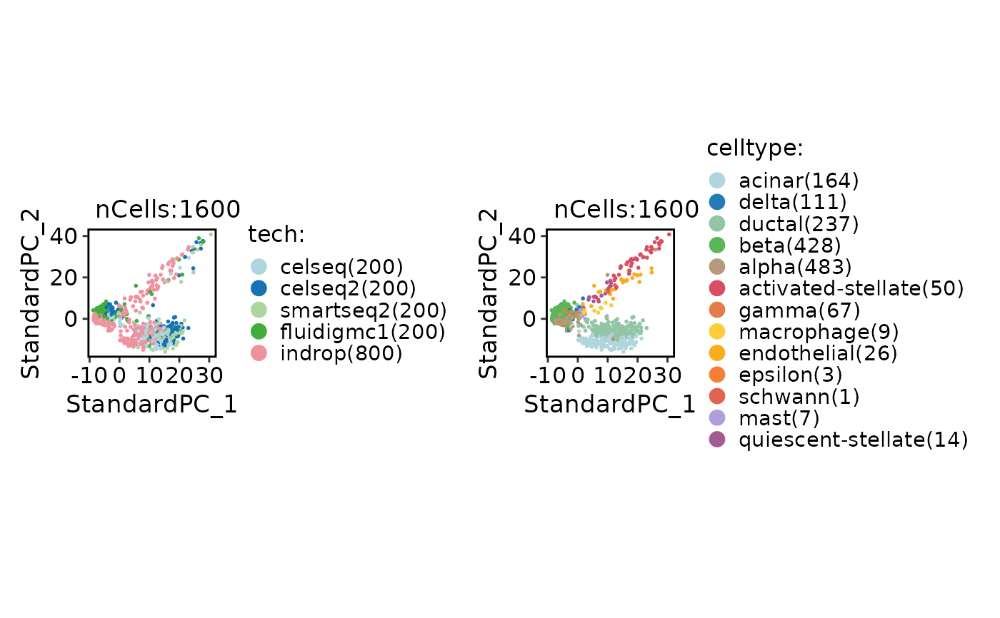
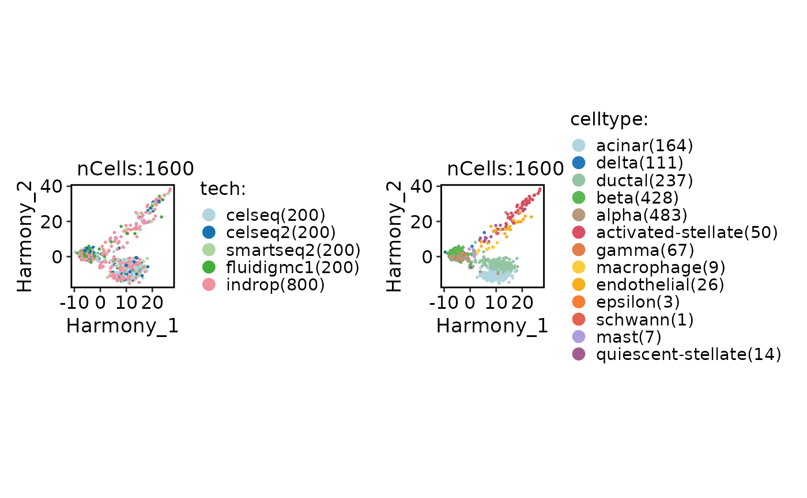

This is a modified version of harmony::RunHarmony specifically designed for compatibility with RunSymphonyMap.
RunHarmony2(object, ...)
# S3 method for Seurat
RunHarmony2(
object,
group.by.vars,
reduction = "pca",
dims.use = 1:30,
project.dim = TRUE,
reduction.name = "Harmony",
reduction.key = "Harmony_",
verbose = TRUE,
seed.use = 11L,
...
)A Seurat object.
Additional arguments to be passed to the RunHarmony function.
A character vector specifying the batch variable name.
A character string specifying the reduction to be used. Default is "pca".
An integer vector specifying the dimensions to be used. Default is 1:30.
A logical value indicating whether to project dimension reduction loadings. Default is TRUE.
A character string specifying the name of the reduction to be stored in the Seurat object. Default is "Harmony".
A character string specifying the prefix for the column names of the Harmony embeddings. Default is "Harmony_".
A logical value indicating whether to print verbose output. Default is TRUE.
An integer specifying the random seed to be used. Default is 11.
panc8_sub <- Standard_scop(panc8_sub)
#> [2024-11-18 15:44:12.540893] Start Standard_scop
#> [2024-11-18 15:44:12.540988] Checking srtList... ...
#> Data 1/1 of the srtList is raw_normalized_counts. Perform NormalizeData(LogNormalize) on the data ...
#> Perform FindVariableFeatures on the data 1/1 of the srtList...
#> Use the separate HVF from srtList...
#> Number of available HVF: 2000
#> [2024-11-18 15:44:13.368416] Finished checking.
#> [2024-11-18 15:44:13.368526] Perform ScaleData on the data...
#> [2024-11-18 15:44:13.862415] Perform linear dimension reduction (pca) on the data...
#> Warning: The following arguments are not used: force.recalc
#> Warning: The following arguments are not used: force.recalc
#> [2024-11-18 15:44:15.477129] Perform FindClusters (louvain) on the data...
#> [2024-11-18 15:44:15.533427] Reorder clusters...
#> [2024-11-18 15:44:15.595793] Perform nonlinear dimension reduction (umap) on the data...
#> Non-linear dimensionality reduction(umap) using Reduction(Standardpca, dims:1-10) as input
#> Found more than one class "dist" in cache; using the first, from namespace 'BiocGenerics'
#> Also defined by ‘spam’
#> Found more than one class "dist" in cache; using the first, from namespace 'BiocGenerics'
#> Also defined by ‘spam’
#> Non-linear dimensionality reduction(umap) using Reduction(Standardpca, dims:1-10) as input
#> Found more than one class "dist" in cache; using the first, from namespace 'BiocGenerics'
#> Also defined by ‘spam’
#> Found more than one class "dist" in cache; using the first, from namespace 'BiocGenerics'
#> Also defined by ‘spam’
#> [2024-11-18 15:44:20.163596] Standard_scop done
#> Elapsed time: 7.62 secs
panc8_sub <- RunHarmony2(panc8_sub, group.by.vars = "tech", reduction = "Standardpca")
#> Error in packageVersion(pkg_name): there is no package called ‘harmony’
CellDimPlot(panc8_sub, group.by = c("tech", "celltype"), reduction = "Standardpca")
#> Warning: No shared levels found between `names(values)` of the manual scale and the data's fill values.
#> Warning: No shared levels found between `names(values)` of the manual scale and the data's fill values.

CellDimPlot(panc8_sub, group.by = c("tech", "celltype"), reduction = "Harmony")
#> Warning: No shared levels found between `names(values)` of the manual scale and the data's fill values.
#> Warning: No shared levels found between `names(values)` of the manual scale and the data's fill values.
